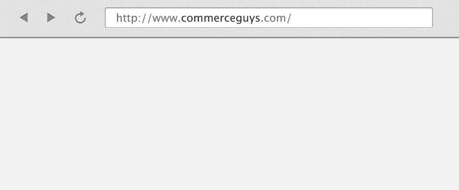

Toward HyperDrupal
Maturing REST on Drupal
Created by Ryan Szrama / @ryanszrama
1. Introduction
Ryan Szrama, Community Dev at Commerce Guys

So why am I not giving my usual Commerce presentation?
Why talk about REST and Hypermedia?
Maybe I'm attracted to constrained systems...
 http://en.wikipedia.org/wiki/QBasic
http://en.wikipedia.org/wiki/QBasic
And niche development communities...
 http://en.wikipedia.org/wiki/Roguelike
http://en.wikipedia.org/wiki/Roguelike
The promise of REST is the API equivalent
of a wiki walk, each response asking,
"Would you like to know (or do) more?"
2. The World Wide Web
Source: http://www.crummy.com/writing/speaking/2008-QCon/URI
HTTP Request
# Request
GET /page/1 HTTP/1.1
Host: www.example.com
Accept: text/html
HTML
# Response
HTTP/1.1 200 Ok
Content-Type: text/html;charset=UTF-8
...
<p>This is a wonderful example, no?</p>
<a href="...">See more examples.</a>
...


of human knowledge and made it accessible on a
global, distributed network.


3. HTTP-based APIs
Source: http://nordsc.com/ext/classification_of_http_based_apis.htmlXML-RPC / SOAP
Use HTTP purely as a transport mechanism.
<?xml version="1.0"?>
<soap:Envelope xmlns:soap="http://www.w3.org/2003/05/soap-envelope">
<soap:Header>
</soap:Header>
<soap:Body>
<m:GetStockPrice xmlns:m="http://www.example.org/stock">
<m:StockName>IBM
</m:GetStockPrice>
</soap:Body>
</soap:Envelope>
Why do more?


RPC URI-tunneling
Idiosyncratic interfaces require extra documentation
and tightly coupled servers and clients.
POST /api/user/1/delete
POST /api/user/1/update
HTTP-based Type I / II
Use HTTP methods and response codes:
# A Type I message uses a generic media type
GET /api/user/1
Accept: application/json
PUT /api/user/1
DELETE /api/user/1
POST /api/user
# A Type II message is self-descriptive
GET /api/user/1
Accept: application/hal+json
REST
Hypermedia API responses include the controls I need to
navigate or manipulate application resources.
<maze version="1.0">
<collection href="/maze/maze/">
<link rel="maze" href="/maze/maze/five-by-five/" />
</collection>
</maze>
Source: http://amundsen.com/media-types/maze/
The Richardson Maturity Model
 Source: http://martinfowler.com/articles/richardsonMaturityModel.html
Source: http://martinfowler.com/articles/richardsonMaturityModel.html
4. Toward HyperDrupal
Follow along: http://hyperdrupal.orgDrupal 7 and earlier
Using the Services module, most Drupal based
web services are a combination of RPC URI-Tunneling
and HTTP-based Type I APIs.
# Login is an example of RPC URI-Tunneling
POST /user/login
# While other resources are HTTP-based Type I
GET /user/1
DELETE /node/3
Drupal 8
Drupal core ships with a REST module that supports:
- Entities as resources with unique URIs
- Representations in different formats
- Manipulation via the HTTP interface
- Self-descriptive messages via HAL
Next Steps
Next steps involve both education and code:
Practical Example
Commerce Mobile:

The promise of REST is the API equivalent
of a wiki walk, each response asking,
"Would you like to know (or do) more?"
The opportunity for Drupal is to become
the new de facto solution for building
restful web services.